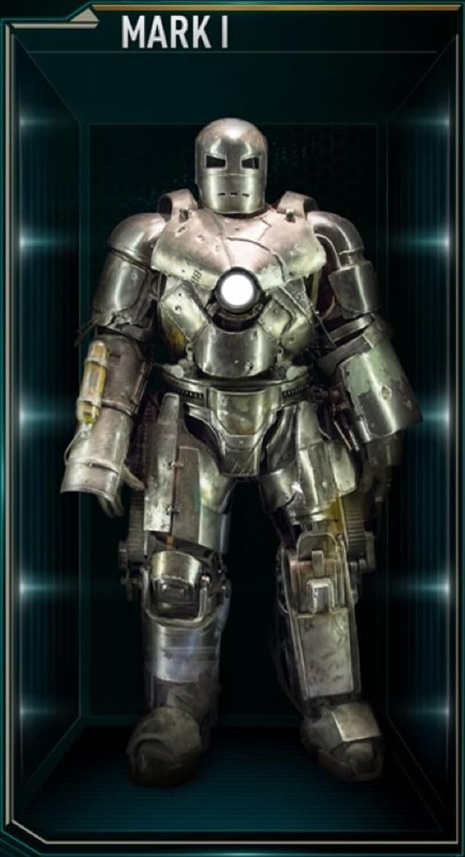
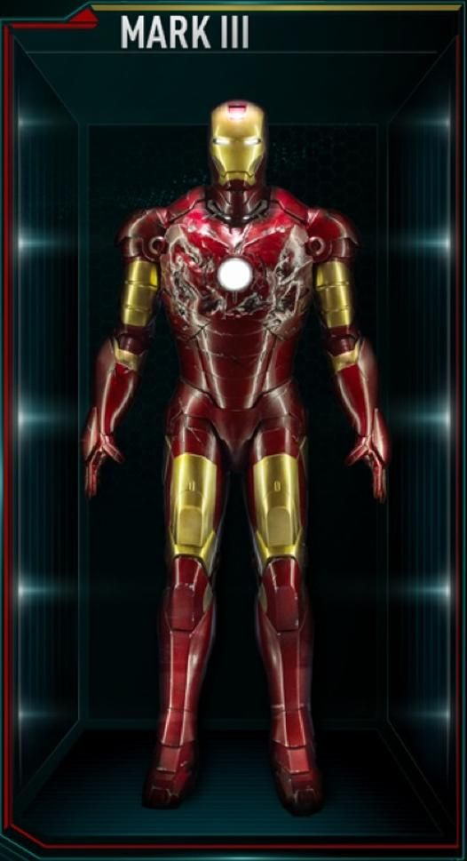
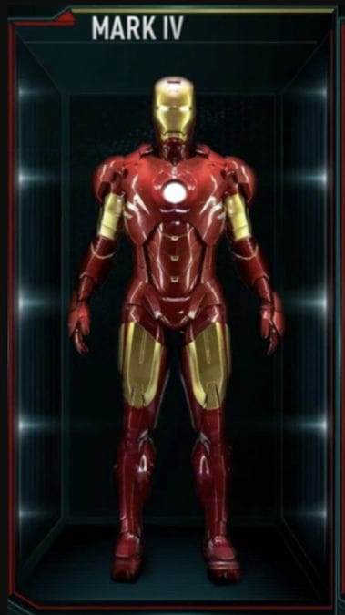
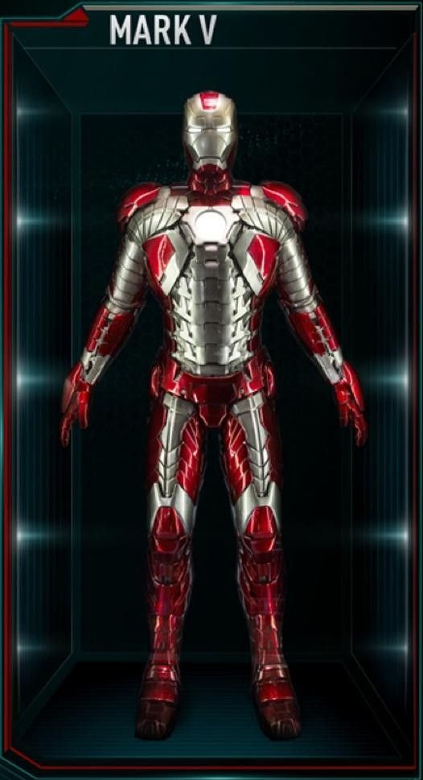
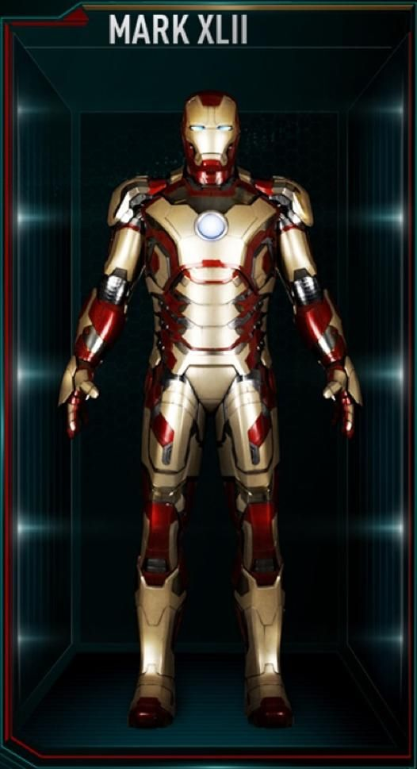
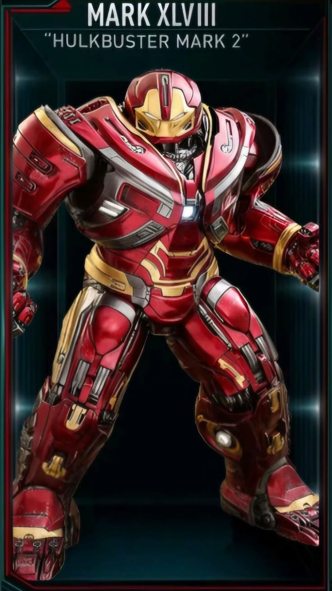
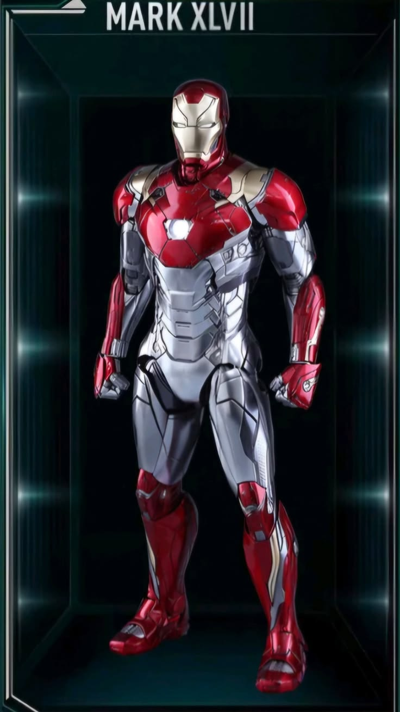
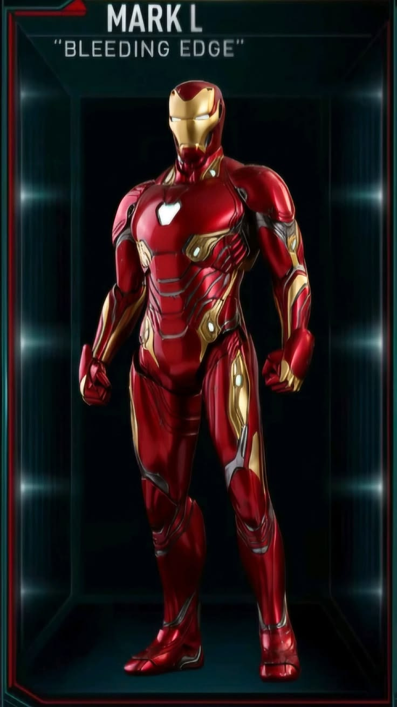

A primeira armadura criada por Tony Stark, feita com sucata e equipada com lança-chamas.

A armadura clássica vermelha e dourada, com repulsores e Reator Arc no peito.

Modelo parecido com a Mark III, mas com melhorias de mobilidade e conforto interno.

A famosa armadura maleta, feita para emergências rápidas e transporte fácil.

Armadura com peças separadas que se conectam automaticamente ao corpo de Tony.

Modelo gigante criado para enfrentar ameaças extremamente fortes, como o Hulk.

A armadura que Tony Stark usa para ajda o homem aranha

Modelo com nanotecnologia, capaz de formar armas e se reconstruir rapidamente.
| Filme | Armadura Recomendada | Motivo |
|---|---|---|
| Homem de Ferro (2008) | Mark III | Primeira armadura clássica vermelha e dourada, ideal para combate e voo. |
| Homem de Ferro (2010) | Mark V | Modelo maleta, leve e rápido para emergências fora da base. |
| Homem de Ferro (2013) | Mark XLII | Armadura modular, com peças que se conectam automaticamente ao corpo. |
| Vingadores: Ultimato (2019) | Mark LXXXV | Modelo avançado com nanotecnologia, alta resistência e armas adaptáveis. |